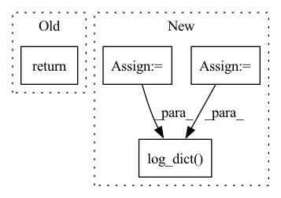

Pattern ID :24612

Before Change
self.log_dict(log_dict, prog_bar=False, logger=True)
return log_dict
"""
return loss
After Change
log_dict = dict()
log_dict["val/rec_loss"] = aeloss
log_dict["val/embed_loss"] = qloss
log_dict["val/total_loss"] = loss
if self.log_images:
log_dict["val/inputs"] = x
log_dict["val/reconstructions"] = xrec
self.log_dict(log_dict, prog_bar=False, logger=True)
return log_dict
In pattern: SUPERPATTERN
Frequency: 4
Non-data size: 4
Instances
Fragment ID: 76364063
Project Name: tgisaturday/dalle-lightning
Commit Name: bfd477ab1e372279e3bb9724ef130bbe14d946e3
Time: 2021-07-13
Author: jamesk1228@gmail.com
File Name: pl_dalle/models/vqvae.py
M Class Name: GumbelVQVAE
N Class Name: GumbelVQVAE
M Method Name: validation_step(3)
N Method Name: validation_step(3)
M Parent Class: VQVAE
N Parent Class: VQVAE
M File Name: pl_dalle/models/vqvae.py
N File Name: pl_dalle/models/vqvae.py
M Start Line: 195
M End Line: 213
N Start Line: 181
N End Line: 193
'>
Before Change
self.log_dict(log_dict, prog_bar=False, logger=True)
return log_dict
"""
return loss
def configure_optimizers(self):
lr = self.hparams.learning_rate
After Change
log_dict = dict()
log_dict["val/rec_loss"] = aeloss
log_dict["val/embed_loss"] = qloss
log_dict["val/total_loss"] = loss
if self.log_images:
log_dict["val/inputs"] = x
log_dict["val/reconstructions"] = xrec
self.log_dict(log_dict, prog_bar=False, logger=True)
return log_dict
def configure_optimizers(self):
lr = self.hparams.learning_rate
'>
Fragment ID: 76364125
Project Name: tgisaturday/dalle-lightning
Commit Name: bfd477ab1e372279e3bb9724ef130bbe14d946e3
Time: 2021-07-13
Author: jamesk1228@gmail.com
File Name: pl_dalle/models/vqvae.py
M Class Name: VQVAE
N Class Name: VQVAE
M Method Name: validation_step(3)
N Method Name: validation_step(3)
M Parent Class: pl.LightningModule
N Parent Class: pl.LightningModule
M File Name: pl_dalle/models/vqvae.py
N File Name: pl_dalle/models/vqvae.py
M Start Line: 101
M End Line: 119
N Start Line: 98
N End Line: 111
'>
Before Change
def validation_step(self, batch, batch_idx):
// TODO
return super().validation_step(batch, batch_idx)
After Change
return {"loss" : loss, "log": tensorboard_logs}
def validation_step(self, batch, batch_idx):
pred = self.model(batch["image"])
loss, individual_metrics_dict, extra_dict = self.loss_function(pred, batch, epoch=self.current_epoch)
y_pred = pred["seg"][:, 0, ...]
y_true = batch["gt_polygons_image"][:, 0, ...]
evaluated_metrics = self.evaluate_metrics(
y_pred, y_true, step_type="train"
)
tensorboard_logs = {k: {"val": v} for k, v in evaluated_metrics.items()}
// use log_dict instead of log
self.log_dict(
evaluated_metrics, on_step=True, on_epoch=True, prog_bar=True, sync_dist=True, logger=False
)
self.log("validation_loss", loss, on_step=True, on_epoch=True, sync_dist=True)
return {"val_loss": loss, "log": tensorboard_logs}
'>
Fragment ID: 76364110
Project Name: dsgoficial/pytorch_segmentation_models_trainer
Commit Name: 21db7d98379ddf1334921d1ea545657757ba8375
Time: 2021-05-14
Author: philipeborba@gmail.com
File Name: pytorch_segmentation_models_trainer/model_loader/frame_field_model.py
M Class Name: FrameFieldSegmentationPLModel
N Class Name: FrameFieldSegmentationPLModel
M Method Name: validation_step(3)
N Method Name: validation_step(3)
M Parent Class: Model
N Parent Class: Model
M File Name: pytorch_segmentation_models_trainer/model_loader/frame_field_model.py
N File Name: pytorch_segmentation_models_trainer/model_loader/frame_field_model.py
M Start Line: 201
M End Line: 201
N Start Line: 211
N End Line: 224
'>
Before Change
def training_step(self, batch, batch_idx):
// TODO
return super().training_step(batch, batch_idx)
def validation_step(self, batch, batch_idx):
// TODO
After Change
return build_combined_loss(self.cfg)
def training_step(self, batch, batch_idx):
pred = self.model(batch["image"])
loss, individual_metrics_dict, extra_dict = self.loss_function(pred, batch, epoch=self.current_epoch)
y_pred = pred["seg"][:, 0, ...]
y_true = batch["gt_polygons_image"][:, 0, ...]
evaluated_metrics = self.evaluate_metrics(
y_pred, y_true, step_type="train"
)
tensorboard_logs = {k: {"train": v} for k, v in evaluated_metrics.items()}
// use log_dict instead of log
self.log_dict(
evaluated_metrics, on_step=True, on_epoch=False, prog_bar=True, logger=False
)
return {"loss" : loss, "log": tensorboard_logs}
def validation_step(self, batch, batch_idx):
pred = self.model(batch["image"])
'>
Fragment ID: 76364090
Project Name: dsgoficial/pytorch_segmentation_models_trainer
Commit Name: 21db7d98379ddf1334921d1ea545657757ba8375
Time: 2021-05-14
Author: philipeborba@gmail.com
File Name: pytorch_segmentation_models_trainer/model_loader/frame_field_model.py
M Class Name: FrameFieldSegmentationPLModel
N Class Name: FrameFieldSegmentationPLModel
M Method Name: training_step(3)
N Method Name: training_step(3)
M Parent Class: Model
N Parent Class: Model
M File Name: pytorch_segmentation_models_trainer/model_loader/frame_field_model.py
N File Name: pytorch_segmentation_models_trainer/model_loader/frame_field_model.py
M Start Line: 197
M End Line: 197
N Start Line: 196
N End Line: 208